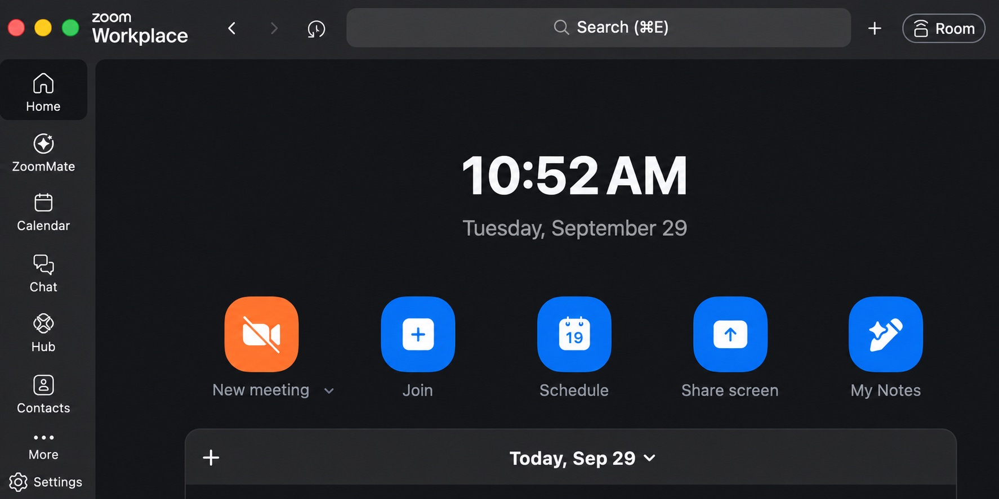

1
Open Zoom Workplace
Launch the Zoom application on your computer.
Sign in, join or host a meeting, fix audio and video, and find your recordings and account settings.
The desktop client is for meetings. The web portal is for recordings, profile information, scheduling, and account settings.

Launch the Zoom application on your computer.
Do not create a separate Zoom account.
Enter su when Zoom asks for the company domain.
Complete the Shenandoah sign-in in your browser.
These are the controls most people need during a typical meeting.
You can also select Join in the desktop client and enter a meeting ID and passcode.
Open your profile picture in the desktop client and select Settings.
Sign in at su.zoom.us. Available options depend on your Zoom license and university settings.
A new recording may take time to process. A recording started by a co-host normally appears under the meeting host's account.
Your personal Zoom link is sometimes called a Zoom alias.
This option may not be available for every account.
A locked option is controlled by Shenandoah's Zoom administrators.
Future instructions will be divided by the screen in front of the user, so the steps and pictures match the room.
Conference rooms with large Start, Join, and Share controls.
Zoom interface with a Room Controls button for devices and displays.
Source-selection interface shown before Zoom opens.